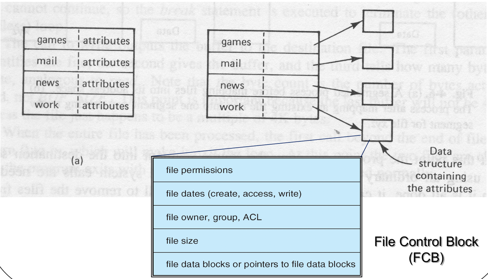
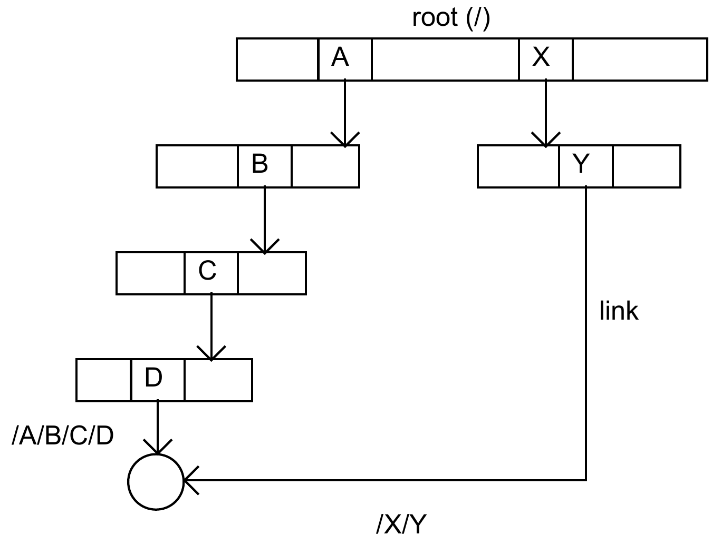
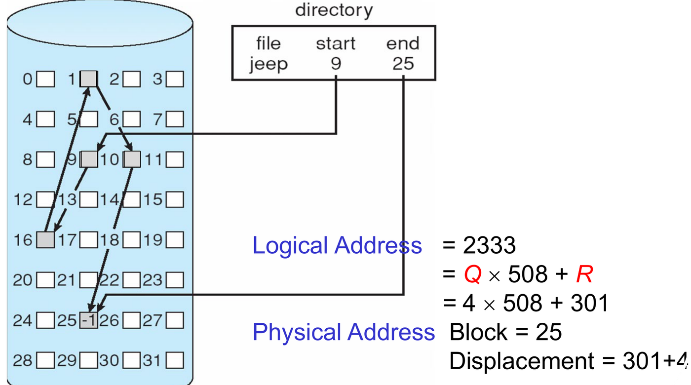
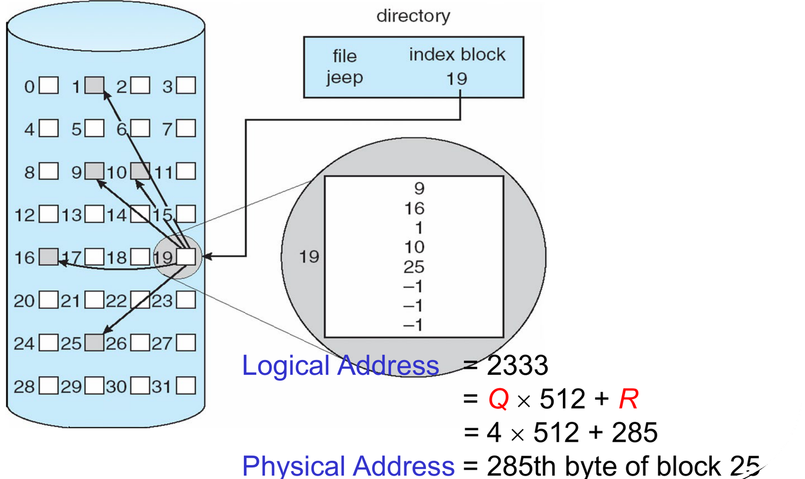
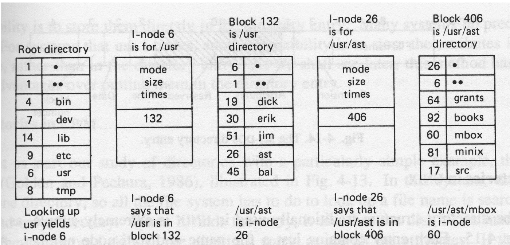
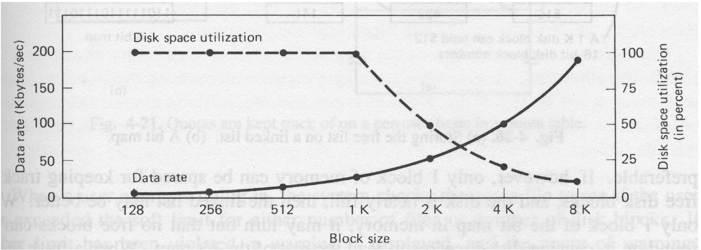
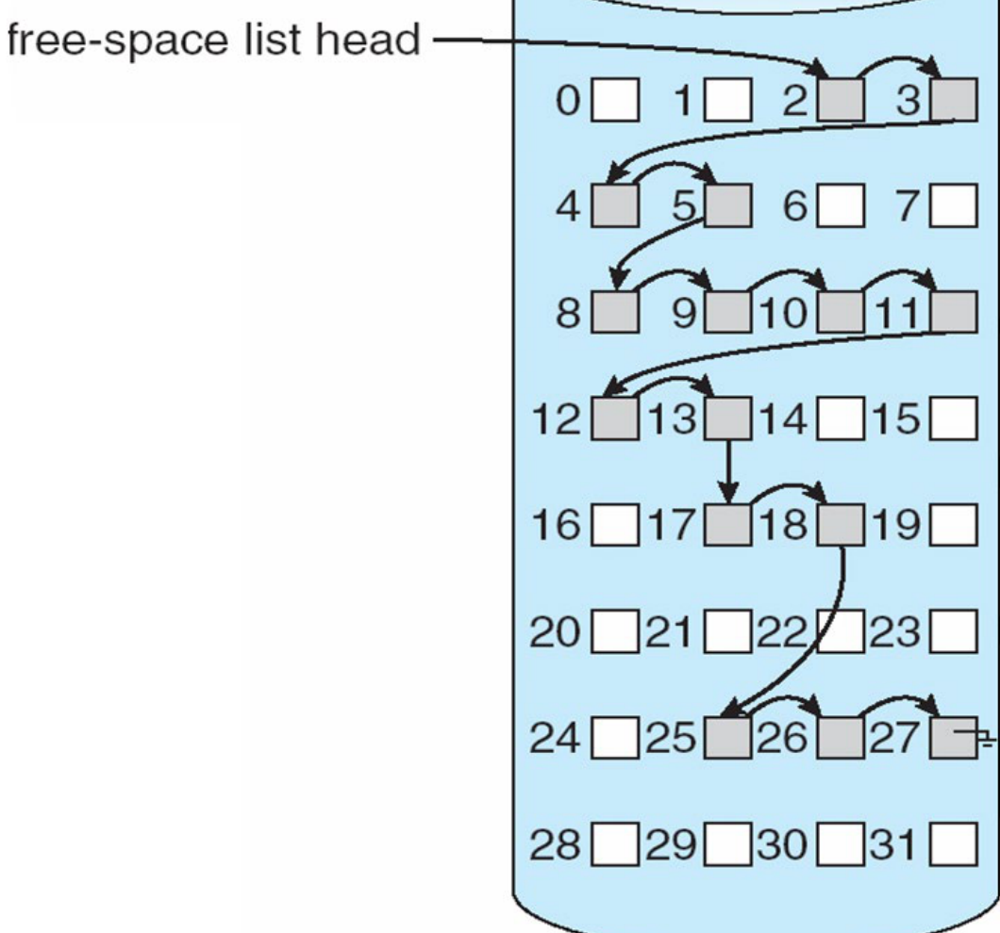

A physical disk is a one-dimensional array of fixed-size blocks (typically 512 B or 4 KB) addressed by integer index. It has no built-in notion of filenames, directories, or permissions.
The file system provides this abstraction: it maps human-readable names and directory hierarchies to raw disk blocks, manages free space, and enforces access permissions.
1. Layered File System Architecture
Operating systems structure file systems in hierarchical layers, where each layer depends only on the one directly below it:

| Layer | Primary Role | What It Does |
|---|---|---|
| Application Programs | API Calls | Issues open, read, write,
close. |
| Logical File System | Names & Metadata | Resolves pathnames, manages directory hierarchies, enforces permissions, and maintains File Control Blocks (FCBs) / inodes. |
| File-Organisation Module | Address Translation | Translates logical block addresses (e.g. file block 2) into physical disk block addresses (e.g. disk block 4182). Tracks free blocks. |
| Basic File System | Buffering & Block I/O | Issues generic read/write block commands to disk drivers; manages in-memory block caches. |
| I/O Control | Hardware Driver Interface | Device drivers and interrupt handlers transferring data between disk controllers and main memory. |
[!IMPORTANT] Key Exam Split:
- Logical File System: Handles names, directories, protection, and metadata (FCBs/inodes).
- File-Organisation Module: Handles block translation (logical physical) and space allocation.
2. Files, File Operations, and Open-File Tables
File Abstraction & Basic Operations
A file is an unstructured, continuous sequence of bytes. Applications access files via:
- Sequential Access: Bytes are processed in order; each operation advances an internal position pointer.
- Direct / Random Access: Applications read or write
arbitrary byte offsets directly using
seek().
Common file operations:
create/delete: Allocates or removes directory entries and disk blocks.open: Resolves path on disk, checks permissions, loads metadata into memory, and returns a file descriptor.read/write: Transfers bytes starting at the current position pointer and advances it.seek: Moves the position pointer to a target offset (0 disk I/O; updates an in-memory variable).close: Decrements the reference count and frees in-memory entries when the count hits zero.
Why
open() Exists & The Two-Table Architecture
Traversing directories on disk to find a file’s metadata for every
single read() or write() is prohibitively
slow. open() performs this directory search
once, caches the file’s metadata in memory, and returns
a lightweight integer file descriptor (fd).
To allow multiple processes to access the same file concurrently with independent read positions, the kernel separates state into two tables:
Process A System-Wide Open-File Table
[fd: 3] ──> [Offset: 500 ] ──┐
├──> [ Inode / FCB copy ]
Process B │ [ Open Count: 2 ]
[fd: 4] ──> [Offset: 12000] ──┘| Table | Scope | Stored Information | Purpose |
|---|---|---|---|
| Per-Process Open-File Table | One per process | Current file position pointer, access mode (read/write), pointer to system-wide entry. | Tracks independent read/write offsets for each process. |
| System-Wide Open-File Table | One for entire OS | Cached copy of the FCB (inode), open count (number of active opens). | Coordinates shared metadata and tracks when a file can be removed from memory. |

AY19/20 S1 Q4a: Why both open-file tables are required, and how open() modifies them
Question: Explain why both per-process open file table and system-wide open file table are required and describe how they are modified in open() operation.
Answer:
- Why both are required:
- The per-process table maintains independent, process-specific state (most importantly, the current file position pointer and process access rights).
- The system-wide table maintains shared state across all processes (a single cached copy of the FCB/inode and an open count), avoiding duplicate memory allocation and synchronizing file size/metadata changes.
- Modifications during
open():- The kernel traverses directories on disk to locate the FCB.
- If the file is already in the system-wide table, the kernel
increments its
open count; otherwise, it allocates a new entry, copies the FCB from disk, and setsopen count = 1. - The kernel verifies process access permissions against the FCB.
- It creates a new entry in the calling process’s per-process table
with
offset = 0, records the access mode, and links it to the system-wide entry. - It returns the index of this per-process entry as the file
descriptor (
fd).
3. Directories, Path Names, and File Sharing
A directory is a specialized file whose data blocks contain directory entries:
- Direct storage: Filename + all attributes stored inside each entry.
- UNIX model: Filename + inode number. All attributes reside in the inode.

- Absolute path: Starts from root
/(e.g.,/usr/ast/mbox). - Relative path: Starts from the current working
directory (e.g.,
ast/mboxif in/usr).
File Sharing: Hard Links vs. Symbolic Links
To allow files to be shared across directories without duplicating data, file systems use an Acyclic Graph Directory:

| Feature | Hard Link | Symbolic Link (Soft Link) |
|---|---|---|
| Underlying Mechanism | A new directory entry pointing to the same inode number. | A separate file whose data block stores the pathname string of the target. |
| Lookup Speed | Fast (direct inode reference). | Slower (requires parsing and resolving the target path). |
| Cross-Device | Cannot span across different file systems/partitions. | Can span across different file systems, partitions, and networks. |
| On Deletion of Target | Content remains intact. Inode reference count
decrements; blocks freed only when count == 0. |
Link becomes a dangling link pointing to a non-existent path. |
Tutorial 11 Q1(a): Hazards and solutions when deleting shared files
Question: What problems may occur if a file is deleted while links to it still exist, especially if disk space or path names are reused? How can these be avoided?
Answer:
- Problems:
- Dangling Pointers: Existing links point to deallocated space.
- Data Corruption / Wrong File Access: If a new file reuses the deallocated disk space or the same pathname, the old link silently accesses the new file.
- Security Vulnerability: A user following an old link may read or overwrite another user’s private data.
- Solutions:
- Reference Counting (UNIX hard links): Inode tracks active links; disk blocks are freed only when link count reaches 0.
- Link Deletion: Maintain a back-pointer list of all links and remove them when the target is deleted.
- Lazy Validation: Check link validity on access;
return an error (
ENOENT) if the target is missing.
Tutorial 11 Q1(b): Single shared copy vs. multiple individual copies
Comparison:
- Single Shared Copy: Updates are immediately visible to all users; minimal disk space. However, requires file locking/synchronization, and accidental corruption affects everyone.
- Multiple Copies (One per user): Users work independently without lock contention; damage is isolated. However, wastes disk space, and copies diverge, making synchronization difficult.
AY Past-Paper Checks: Directory & Link True/False
- AY17/18 S1 Q4a(i): If a file has a symbolic link, it can be accessed using two absolute path names. True (its original path and the link’s path).
- AY18/19 S1 Q4a(i): Using either a symbolic or a hard link, a file can have different names. True (both mechanisms create additional named directory entries).
- AY17/18 S2 Q4a(i): Compare tree vs acyclic graph. Trees restrict each file to a single parent; acyclic graphs allow multiple parents via links for sharing.
4. File Protection in UNIX
UNIX uses 9 permission bits divided into three classes: Owner
(u), Group (g), and
Public/Other (o). Each class has three
rights: Read (r = 4), Write
(w = 2), and Execute (x =
1):
File vs. Directory Permissions
| Permission | Regular File | Directory |
|---|---|---|
Read (r) |
Read file content. | List filenames inside the directory
(ls). |
Write (w) |
Modify file content. | Create, rename, or delete files inside the directory. |
Execute (x) |
Execute program/script. | Traverse/Enter the directory (cd,
accessing inodes inside). |
[!WARNING]
- Directory
xis mandatory: Lackingxon a directory prevents accessing any file inside it, even if the file itself has permissions777(rwxrwxrwx).- File deletion depends on directory
w: Deleting a file modifies the enclosing directory’s list. It requireswon the directory, not on the file itself!
AY Past-Paper Checks: Protection Scenarios
- AY17/18 S1 Q4a(ii): With bits
r-x r-x --x, only the owner can read the file. False. Group also hasr-x(read access). - AY17/18 S2 Q4a(ii): Bits
rwx r-x r--. Permissions for owner’s group?r-x= read and execute. - AY18/19 S2 Q4a(ii): Only owner can read/write;
group can read; others no access.
rw- r-- ---(octal 640). - Directory traversal trap: Directory has
---, file inside hasrwxrwxrwx. Can user read it? No. Lacksxon directory.
5. File Space Allocation Methods
To locate byte offset in a file with block payload :
The Three Allocation Schemes
- Contiguous Allocation:
- File occupies a continuous range of physical blocks:
.
Directory stores
(start, length). - Pros: Optimal sequential and random access (1 disk read).
- Cons: External fragmentation; file expansion is difficult (requires reallocation or causes internal fragmentation).
- File occupies a continuous range of physical blocks:
.
Directory stores
- Linked Allocation:
- Each block stores data plus a pointer (size
)
to the next block:
.
Directory stores
first_block. - Pros: No external fragmentation; files grow dynamically block by block.
- Cons: No random access ( disk reads to reach block ); pointer overhead; chain corruption risk.
- (Note: FAT solves the random access penalty by caching the link table entirely in RAM).
- Each block stores data plus a pointer (size
)
to the next block:
.
Directory stores
- Indexed Allocation:
- Each file has an index block containing an array of
pointers to data blocks. Directory stores
index_block_num. - Pros: Fast direct access without external fragmentation.
- Cons: Index block overhead for small files; file size capped by pointers fitting in one block ().
- Each file has an index block containing an array of
pointers to data blocks. Directory stores



| Metric | Contiguous | Linked | Indexed |
|---|---|---|---|
| Directory Stores | Start block & length | First block pointer | Index block pointer |
| Direct / Random Access | 1 read | reads | 2 reads (Index + Data) |
| External Fragmentation | Yes | No | No |
| File Growth | Difficult | Easy | Easy (up to index size) |
Step-by-Step Method: Calculating Disk Reads for File Access
To find disk I/Os required to read bytes starting at byte offset :
- Find byte range: .
- Determine usable block size : for Contiguous/Indexed; for Linked.
- Compute logical block indices: , .
- Compute Disk Reads (assuming directory is
cached in memory):
- Contiguous: reads.
- Linked: Must traverse from block 0 to reads.
- Indexed: reads. (If index block is already cached, count is just ).
Tutorial 11 Q3: Disk I/O across allocation methods
Question: Block size = 1000 B, pointer = 4 B. Directory cached in RAM. To read 200 bytes from byte 1900, how many disk I/Os are required for Contiguous, Linked, and Indexed?
Solution:
- Byte range: 1900 to .
- Contiguous
(
B):
- , .
- Blocks 1 and 2 needed 2 reads.
- Linked
(
B):
- , .
- Must traverse from block 0 through block 2 3 reads (blocks 0, 1, 2).
- Indexed
(
B):
- Read index block (1) + read data blocks 1 and 2 (2) 3 reads.
AY Past-Paper Problems: Allocation Selection & Read Counts
- AY18/19 S1 Q4b: Block size = 512 B. Read 600
bytes from byte 5200 (range 5200–5799
blocks 10 and 11).
- Contiguous: Read blocks 10 and 11 2 reads.
- Linked: Traverse blocks 0 through 11 12 reads.
- Indexed: Index block + blocks 10 and 11 3 reads.
- AY18/19 S2 Q4b: Choose best allocation
method:
- (i) Infrequent updates, frequent random access: Contiguous (fastest direct access, zero index overhead; growth cost irrelevant).
- (ii) Frequent updates, frequent random access: Indexed (fast direct access + easy dynamic block allocation without external fragmentation).
6. The UNIX Multi-Level Inode Architecture
To support massive files without penalizing small files with large index blocks, UNIX inodes use a hybrid structure:

An inode contains file metadata and 15 block pointers:
- 12 Direct Pointers: Point directly to data blocks.
- 1 Single Indirect Pointer: Points to an index block of data pointers.
- 1 Double Indirect Pointer: Points to an index block of single-indirect pointers.
- 1 Triple Indirect Pointer: Points to an index block of double-indirect pointers.
Inode Calculation Toolkit
Let = Block size, = Pointer size, and (pointers per block):
| Component | Index Blocks Used | Data Blocks Supported | Capacity Formula |
|---|---|---|---|
| Direct Pointers | 0 | ||
| Single Indirect | 1 | ||
| Double Indirect | |||
| Triple Indirect |
Disk
Reads to Access Logical Block
(after open(), inode in RAM)
- Direct (): 1 read (data block).
- Single Indirect (): 2 reads (index block + data block).
- Double Indirect (): 3 reads (double index + single index + data block). (Note: An indirect index block fetched once during a read request is cached for subsequent blocks under it).
Path Resolution
(open()) Disk Reads
For a path with
components below the cached starting directory
(e.g. /usr/ast/mbox with root cached has
):
(Each intermediate directory costs 2 reads: its inode + its data
block. The target file costs 1 read: its inode).

Worked Inode Exam Problems
Tutorial 11 Q2: Inode open, seek, read, and max file size
Question: Inodes have 6 direct pointers, 1 single indirect pointer. Block size = 1000 B, pointer size = 2 B. Root is in memory.
fd = open("/usr/ast/mbox");
seek(fd, 5900);
read(fd, buf, 200);(a) Disk reads for open()? (b) Disk reads for
seek() and read()? (c) Max supported file
size?
Solution:
- (a)
open("/usr/ast/mbox"):- Search root (in RAM)
read
usrinode (1) readusrdirectory block (2) readastinode (3) readastdirectory block (4) readmboxinode (5). 5 reads.
- Search root (in RAM)
read
- (b)
seekandread:seek(5900): Updates memory offset only 0 reads.read(200): Reads bytes 5900 to 6099 spans Block 5 () and Block 6 ().- Block 5 is direct 1 read (data block 5).
- Block 6 is single indirect 2 reads (single-indirect index block + data block 6).
- Total 3 reads.
- (c) Max File Size:
- pointers.
- Max Blocks blocks.
- .
AY17/18 S2 Q4b: Inode with 10 direct, 1 single, 1 double indirect
Question: Block size = 512 B, pointer = 8 B. 10 direct, 1 single, 1 double indirect. Read 1,000 bytes starting at offset 37,000. Inode is in memory. (i) Which logical blocks are accessed? (ii) Disk reads performed? (iii) Max file size?
Solution:
- pointers per block.
- Direct: Blocks 0–9. Single indirect: Blocks 10–73. Double indirect: Block 74 onward.
- (i) Blocks accessed: Byte range 37,000–37,999.
- , Blocks 72, 73, and 74.
- (ii) Disk reads:
- Blocks 72 and 73 (single indirect): 1 index read + 2 data reads reads.
- Block 74 (double indirect): 1 double-index read + 1 single-index read + 1 data read reads.
- Total .
- (iii) Max file size:
- ().
AY19/20 S1 Q4b & AY16/17 S1 Q4b: Boundary reads, appending, and path traversal
- AY19/20 S1 Q4b: Block = 1000 B, pointer = 10 B
().
10 direct, 1 single, 1 double. Open file is 110,000 bytes (110 blocks:
0–109).
- (i) Read 1000 bytes from byte 9500 (range 9500–10499 blocks 9 and 10): Block 9 is direct (1 read); Block 10 is single indirect (2 reads) 3 reads.
- (ii) Append a new data block (block 110): Direct (10) + single (100) cover blocks 0–109. Block 110 starts double indirection allocate double-index block + single-index block + data block 3 disk accesses.
- (iii) Max file size: .
- AY16/17 S1 Q4b: Open
/spell/mail/ptr/firstwith/spell/mailcached in RAM:- Read
ptrinode (1) + readptrdirectory block (2) + readfirstinode (3) 3 disk reads.
- Read
7. Block Size Trade-offs and Free-Space Management
Block Size Trade-Off
Choosing disk block size balances throughput against space utilization:

- Large Blocks (e.g. 8 KB): High data rate (fewer seeks, more payload per transfer). Lower space utilization due to internal fragmentation in the trailing block.
- Small Blocks (e.g. 512 B): High space utilization (minimal waste). Lower data rate (more seeks, large pointer/index overhead).
- Dual Block Sizes (Tutorial 11 Q4): Large blocks for file bodies + small fragments (e.g. 512 B) for tails. Minimizes internal fragmentation while preserving high throughput.
Free-Space Management

| Scheme | Space Overhead | Allocation / Lookup Speed | Contiguous Allocation? |
|---|---|---|---|
| Bit Vector (Bitmap) (1 bit per block: 0 = free, 1 = allocated) |
Fast via CPU bit-scan instructions (if in RAM). | Easy to find contiguous free runs. | |
| Linked Free List (Pointers stored inside free blocks) |
Zero extra space | Slow (requires disk seeks to traverse chain). | Hard; blocks are scattered. |
AY Past-Paper Checks: Free Space & Sizing
- AY18/19 S2 Q4c (Compare Bitmap vs Linked List): Linked list uses zero extra storage but is inefficient due to disk traversal. Bitmap requires dedicated memory (1 bit/block) but is extremely fast and efficiently finds contiguous runs.
- Bitmap sizing (16 GB disk, 512 B blocks):
- AY18/19 S1 Q4a(ii): Large block size results in high data rate and high disk utilization. False (data rate is high, but space utilization is low).